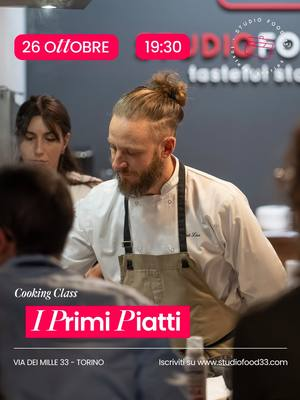
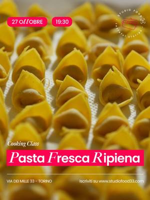
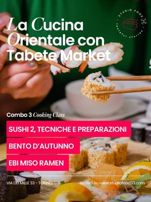
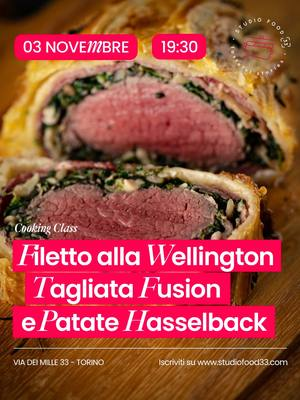
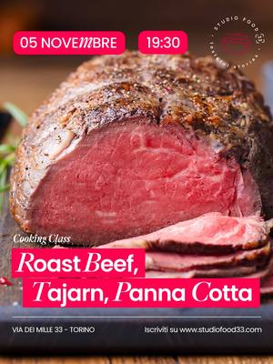
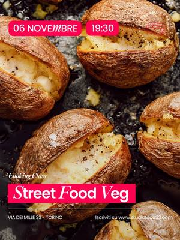
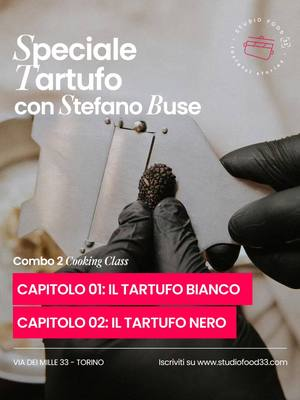

STUDIOFOOD33
Uno studio di cucina in Via dei Mille dove si cucina insieme ai cuochi: cooking class serali a tema, dal sushi alla pasta fresca, anche per feste e gruppi.
27 attività in programma

lun26ottCucinaCooking class: primi piattilunedì 26 ottobre, 19:30–22:30Centro (TO) · 85 €con STUDIOFOOD33 con lo chef Patrik Lisa
mar27ottCucinaCooking class: pasta fresca ripienamartedì 27 ottobre, 19:30Centro (TO)con STUDIOFOOD33 con lo chef Stefano Buse
lun2novCucinaCooking class: sushi livello 2lunedì 2 novembre, 19:30–22:30Centro (TO) · 85 €con STUDIOFOOD33 con Tabete Market
mar3novCucinaCooking class: filetto e tagliatamartedì 3 novembre, 19:30–22:30Centro (TO) · 75 €con STUDIOFOOD33 con lo chef Stefano Buse- mer4novCucinaCooking class: cucina del Sichuanmercoledì 4 novembre, 19:30–22:30Centro (TO) · 85 €con STUDIOFOOD33

gio5novCucinaCooking class: roast beef e tajaringiovedì 5 novembre, 19:30–22:30Centro (TO) · 75 €con STUDIOFOOD33 con lo chef Stefano Buse
ven6novCucinaCooking class: street food vegetalevenerdì 6 novembre, 19:30–22:30Centro (TO) · 85 €con STUDIOFOOD33 con le chef di RosaRegina
sab7novCucinaCooking class: tartufo biancosabato 7 novembre, 20:00–23:00Centro (TO) · 150 €con STUDIOFOOD33 con lo chef Stefano Buse- mar10novCucinaOde al Piemonte: cucina piemontesemartedì 10 novembre, 19:30–22:30Centro (TO) · 75 €con STUDIOFOOD33
- lun16novCucinaCooking class: pizza e focaccia ligurelunedì 16 novembre, 19:30–22:30Centro (TO) · 85 €con STUDIOFOOD33
- mar17novCucinaCooking class: risotti gourmetmartedì 17 novembre, 19:30–22:30Centro (TO) · 75 €con STUDIOFOOD33
- mer18novCucinaCooking class: noodles giapponesimercoledì 18 novembre, 19:30–22:30Centro (TO) · 85 €con STUDIOFOOD33
- lun23novCucinaCooking class: aperitivo messicanolunedì 23 novembre, 19:30–22:30Centro (TO) · 85 €con STUDIOFOOD33
- gio26novCucinaCooking class: bento d’autunnogiovedì 26 novembre, 19:30–22:30Centro (TO) · 85 €con STUDIOFOOD33 con Tabete Market
- lun30novCucinaCooking class: cucina franceselunedì 30 novembre, 19:30–22:30Centro (TO) · 85 €con STUDIOFOOD33 con lo chef Patrik Lisa
- mar12genCucinaCooking class: plin, brasato e bunetmartedì 12 gennaio, 19:30–23:30Centro (TO) · 85 €con STUDIOFOOD33
- lun18genCucinaCooking class: pizza al tegamino e farinatalunedì 18 gennaio, 19:30–23:30Centro (TO) · 75 €con STUDIOFOOD33
- mar19genCucinaCooking class: cucina romanamartedì 19 gennaio, 19:30–22:30Centro (TO) · 85 €con STUDIOFOOD33
- mer20genCucinaCooking class: sushi e bollicinemercoledì 20 gennaio, 19:30–22:30Centro (TO) · 85 €con STUDIOFOOD33
- gio21genCucinaCooking class: ramengiovedì 21 gennaio, 19:30–22:30Centro (TO) · 85 €con STUDIOFOOD33 con Tabete Market
- lun25genCucinaCooking class: Messico vegetarianolunedì 25 gennaio, 19:30–22:30Centro (TO) · 85 €con STUDIOFOOD33
- ven29genCucinaCooking class: tartufo nerovenerdì 29 gennaio, 20:00–23:00Centro (TO) · 150 €con STUDIOFOOD33 con lo chef Patrik Lisa
- mar2febCucinaCooking class: tagliatelle e vitello tonnatomartedì 2 febbraio, 19:30–22:30Centro (TO) · 75 €con STUDIOFOOD33 con La Bottega di Mastro Taricco
- mer10febCucinaCooking class: gyoza e birra giapponesemercoledì 10 febbraio, 19:30–22:30Centro (TO) · 85 €con STUDIOFOOD33
- dom14febCucinaLove is in the kitchen: cena di San Valentinodomenica 14 febbraio, 20:00–23:00Centro (TO) · 130 €con STUDIOFOOD33
- mer17febCucinaCooking class: ramen e birra giapponesemercoledì 17 febbraio, 19:30–22:30Centro (TO) · 75 €con STUDIOFOOD33
- mar23febCucinaCooking class: battuta, risotto e bonetmartedì 23 febbraio, 19:30–22:30Centro (TO) · 75 €con STUDIOFOOD33